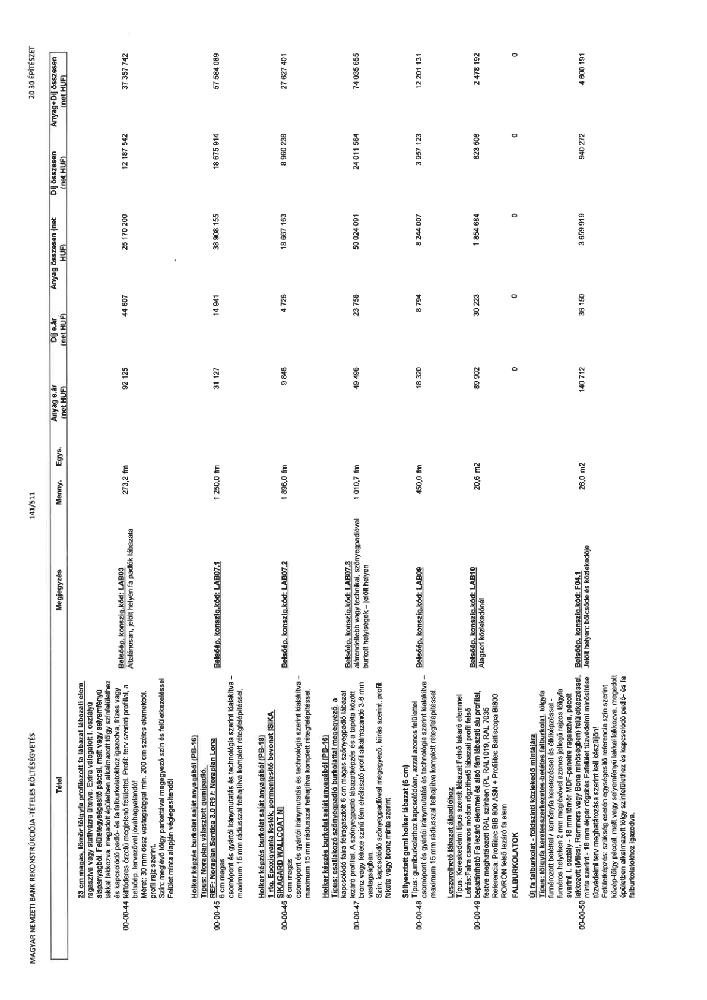

| Tétel | Megjegyzés | Menny. | Egys. | Anyag e.ár (net HUF) | Díj e.ár (net HUF) | Anyag összesen (net HUF) | Díj összesen (net HUF) | Anyag+Díj összesen (net HUF) |
|---|---|---|---|---|---|---|---|---|
| 00-00-44 23 cm magas, tömör tölgyfa profilozott fa lábazati elem ragasztva vagy stafnivázra ültetve. Extra válogatott I. osztályú alapanyagból. Felületegységesítő páccal, matt vagy selyemfényű lakkal lakkozva, megadott épületben alkalmazott tölgy színfelülethez és kapcsolódó padló- és falburkolatokhoz igazodva, frízes vagy felületi erezetű megjelenő felülettel. Profil: terv szerint profillal, a belsőép. tervezővel jóváhagyatandó! Méret: 30 mm össz vastagsággal min. 200 mm széles elemekből, profil rajz szerint. Szín: meglévő tölgy parkettával megegyező szín és felületkezeléssel Felület minta alapján véglegesítendő! | Belsőép. konszig. kód: LAB03 Általánosan, jelölt helyen fa padlók lábazata | 273,2 | fm | 92 125 | 44 607 | 25 170 200 | 12 187 542 | 37 357 742 |
| 00-00-45 Holker képzés burkolat saját anyagából (PB-16) Típus: Noraplan választott gumipadló. REF: Noraplan Sentica 3,0 R9 /: Noraplan Lona 6 cm magas csomópont és gyártói iránymutatás és technológia szerint kialakítva - maximum 15 mm rádiusszal felhajlítva komplett rétegfelépítéssel. | Belsőép. konszig. kód: LAB07.1 | 1 250,0 | fm | 31 127 | 14 941 | 38 908 155 | 18 675 914 | 57 584 069 |
| 00-00-46 Holker képzés burkolat saját anyagából (PB-18) 1 rtg. Epoxigyanta festék, pormentesítő bevonat [SIKA SIKAGARD WALLCOAT N] 6 cm magas csomópont és gyártói iránymutatás és technológia szerint kialakítva - maximum 15 mm rádiusszal felhajlítva komplett rétegfelépítéssel. | Belsőép. konszig. kód: LAB07.2 | 1 896,0 | fm | 9 846 | 4 726 | 18 667 163 | 8 960 238 | 27 627 401 |
| 00-00-47 Holker képzés burkolat saját anyagából (PB-16) Típus: csatlakozó szőnyegpadló burkolattal megegyező, a kapcsolódó falra felragasztott 6 cm magas szőnyegpadló lábazat lezáró profillal. A szőnyegpadló lábazatképzés és a tapéta között bronz vagy fekete színű fém elválasztó profil alkalmazandó 3-6 mm vastagságban. Szín: Kapcsolódó szőnyegpadlóval megegyező, kiírás szerint, profil: fekete vagy bronz minta szerint | Belsőép. konszig. kód: LAB07.3 alárendeltebb vagy technikai, szőnyegpadlóval burkolt helyiségek - jelölt helyen | 1 010,7 | fm | 49 496 | 23 758 | 50 024 091 | 24 011 564 | 74 035 655 |
| 00-00-48 Süllyesztett gumi holker lábazat (6 cm) Típus: gumiburkolathoz kapcsolódóan, azzal azonos felülettel csomópont és gyártói iránymutatás és technológia szerint kialakítva - maximum 15 mm rádiusszal felhajlítva komplett rétegfelépítéssel. | Belsőép. konszig. kód: LAB09 | 450,0 | fm | 18 320 | 8 794 | 8 244 007 | 3 957 123 | 12 201 131 |
| 00-00-49 Leszerelhető lábazat álpadlóhoz Típus: Kereskedelmi típus felső takaró elemmel Leírás:Falra csavaros módon rögzíthető lábazati profil felső bepattintható Fa lezáró elemmel és alsó fém lábazati alu profillal, festve meghatározott RAL színben (PL RAL1019, RAL 7035 Referencia: Profilitec BIB 800 ASN + Profilitec Battiscopa BI800 RO/RON felső lezáró fa elem | Belsőép. konszig. kód: LAB10 Alagsori közlekedőnél | 20,6 | m2 | 89 902 | 30 223 | 1 854 684 | 623 508 | 2 478 192 |
| FALBURKOLATOK | NaN | NaN | NaN | 0 | 0 | 0 | 0 | 0 |
| 00-00-50 Új fa falburkolat - földszinti közlekedő mintájára Típus: tölgyfa keretszerkezetes-betétes falburkolat, tölgyfa furnérozott betéttel / keményfa keretezéssel és élkiképzéssel - furnéros helyeken 2 mm jellegű rajzos tölgyfa rajzos tölgyfa svarni, I. osztályú - 18 mm MDF-panelre ragasztva, pácolt lakkozott (Milesi, Remmers vagy Bona minőségben) felületképzéssel, minta szerint. - 18 mm ékpár rögzítés Falfelület tűzvédelmi minősítése tűzvédelmi terv meghatározása szerint kell készüljön! Felületképzés: szükség esetén egységesítő referencia szín szerint közép-tölgy páccal, matt vagy selyemfényű lakkal lakkozva, megadott épületben alkalmazott tölgy színfelülethez és kapcsolódó padló- és fa falburkolatokhoz igazodva. | Belsőép. konszig. kód: F04.1 Jelölt helyen: bölcsőde és közlekedője | 26,0 | m2 | 140 712 | 36 150 | 3 659 919 | 940 272 | 4 600 191 |
